Μουσείο Teriade
Το Μουσείο - Βιβλιοθήκη Teriade είναι ένα από τα σημαντικότερα μουσεία τέχνης στη Λέσβο και βρίσκεται στη Βαρειά, κοντά στη Μυτιλήνη. Ιδρύθηκε από τον Στρατή Ελευθεριάδη, γνωστό διεθνώς ως Teriade, που ήταν σπουδαίος τεχνοκριτικός και εκδότης στο Παρίσι τον 20ό αιώνα. Το μουσείο είναι ιδιαίτερα γνωστό γιατί φιλοξενεί έργα και εκδόσεις τεράστιων καλλιτεχνών όπως οι Pablo Picasso, Henri Matisse, Marc Chagall και Joan Miró. Εκεί εκτίθενται τα περίφημα “livres d’artiste”, δηλαδή καλλιτεχνικά βιβλία όπου συνεργάζονταν μεγάλοι ζωγράφοι και λογοτέχνες. Έχει επίσης στενή σχέση με τον Θεόφιλος Χατζημιχαήλ, αφού ο Teriade ήταν από τους ανθρώπους που ανέδειξαν το έργο του διεθνώς. Πολύ κοντά βρίσκεται και το Μουσείο Θεόφιλου. Αν σου αρέσει η μοντέρνα τέχνη ή η ιστορία της Λέσβου, αξίζει πολύ μια επίσκεψη γιατί συνδυάζει τοπική πολιτιστική κληρονομιά με ευρωπαϊκή καλλιτεχνική ιστορία.
Το Μουσείο Teriade έχει και μια πιο “ιδιαίτερη” πλευρά που δεν φαίνεται πάντα στην πρώτη επίσκεψη: Το κτίριο είναι σχεδιασμένο ώστε να μοιάζει περισσότερο με ήσυχο εκθεσιακό χώρο βιβλιοθήκης παρά με κλασικό μουσείο, γιατί βασική ιδέα είναι το “βιβλίο ως έργο τέχνης”. Πολλά από τα εκθέματα είναι σε μορφή σειρών έργων (συλλογές/άλμπουμ) και όχι μεμονωμένων πινάκων. Αυτό σημαίνει ότι βλέπεις την εξέλιξη ενός θέματος βήμα-βήμα. Υπάρχουν εκδόσεις που έχουν γίνει με χειροποίητες τεχνικές εκτύπωσης (λιθογραφία, χαλκογραφία), όχι απλή εκτύπωση όπως σήμερα. Η ατμόσφαιρα είναι αρκετά “ήσυχη” και σκοτεινή εσωτερικά, για να προστατεύονται τα έργα, οπότε δίνει πιο πολύ αίσθηση αρχειακού χώρου παρά gallery. Το μουσείο λειτουργεί σαν “γέφυρα” ανάμεσα σε Παρίσι και Λέσβο, γιατί ο Teriade έφερνε εδώ τη διεθνή avant-garde τέχνη που γνώριζε στο εξωτερικό.
Η επίσκεψη σε έναν χώρο τέχνης προσφέρει μια ήρεμη εμπειρία απομάκρυνσης από την καθημερινότητα. Ο επισκέπτης κινείται σε ένα περιβάλλον ησυχίας και συγκέντρωσης, όπου η προσοχή στρέφεται στην παρατήρηση και στη λεπτομέρεια. Η απλότητα του χώρου και η οργάνωσή του βοηθούν ώστε κάθε στοιχείο να αναδεικνύεται καθαρά, δημιουργώντας μια προσωπική και μοναδική εμπειρία για τον καθένα. Το Μουσείο Teriade λειτουργεί ως σημείο αναφοράς για τη μελέτη της σχέσης μεταξύ τέχνης και βιβλίου, προσφέροντας ένα ολοκληρωμένο αρχειακό και εκθεσιακό σύνολο που συνδέει την ευρωπαϊκή πρωτοπορία με την ελληνική καλλιτεχνική παράδοση.
Ένας χώρος τέχνης λειτουργεί ως σημείο έμπνευσης και ανακάλυψης. Μέσα από την παρατήρηση και τη σιωπή, ο επισκέπτης έχει την ευκαιρία να δει τα έργα με πιο προσεκτική ματιά και να δημιουργήσει τη δική του ερμηνεία. Η εμπειρία δεν είναι ίδια για όλους, αλλά προσαρμόζεται σε κάθε άτομο, ανάλογα με τη διάθεση και την οπτική του.Η τέχνη λειτουργεί σαν μια μορφή επικοινωνίας χωρίς λόγια. Μέσα από εικόνες, χρώματα και σχήματα, μεταδίδονται ιδέες και συναισθήματα που δεν χρειάζονται επεξήγηση. Κάθε έργο αποτελεί μια αφορμή για σκέψη και προσωπική ερμηνεία, δημιουργώντας έναν διάλογο ανάμεσα στον δημιουργό και τον θεατή.
Gallery
Στο Μουσείο Teriade θα δεις κυρίως έργα μοντέρνας τέχνης και εικονογραφήσεις από τα διάσημα καλλιτεχνικά βιβλία που εξέδιδε ο ίδιος ο Teriade στο Παρίσι. Οι πίνακες και οι λιθογραφίες έχουν έντονα χρώματα, αφαιρετικά σχήματα και πολύ προσωπικό ύφος, χαρακτηριστικά της ευρωπαϊκής πρωτοπορίας του 20ού αιώνα.
Ξεχωρίζουν έργα των:
Pablo Picasso — μορφές με γεωμετρικά στοιχεία και έντονη έκφραση.
Henri Matisse — πολύχρωμες συνθέσεις με απλές αλλά δυνατές γραμμές.
Marc Chagall — ονειρικές εικόνες με συμβολισμό και φαντασία.
Joan Miró — αφηρημένα σχήματα και παιχνιδιάρικα σύμβολα.
Υπάρχουν επίσης έργα του Θεόφιλος Χατζημιχαήλ, που απεικονίζουν σκηνές από την ελληνική παράδοση, ήρωες του 1821, χωριά, γιορτές και καθημερινή ζωή. Οι πίνακές του έχουν λαϊκό ύφος, ζωντανά χρώματα και μεγάλη αφηγηματική δύναμη.
Γενικά, οι συλλογές του μουσείου συνδυάζουν τη δυτικοευρωπαϊκή μοντέρνα τέχνη με την ελληνική λαϊκή ζωγραφική, κάτι αρκετά μοναδικό για μουσείο στην Ελλάδα.
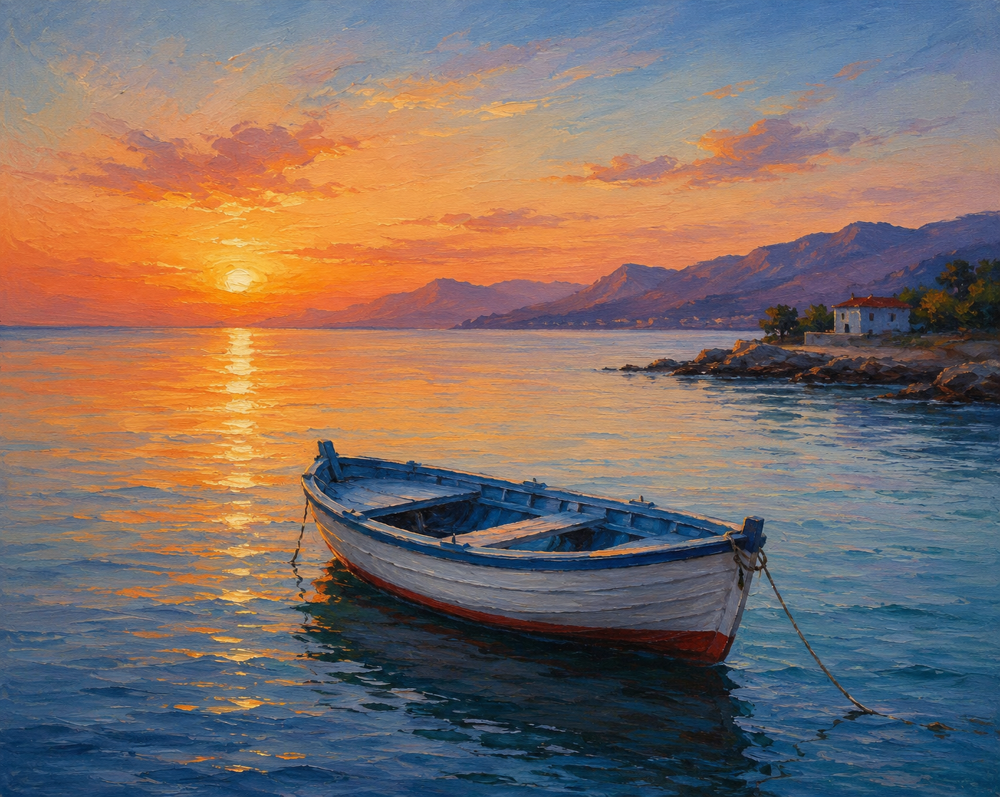
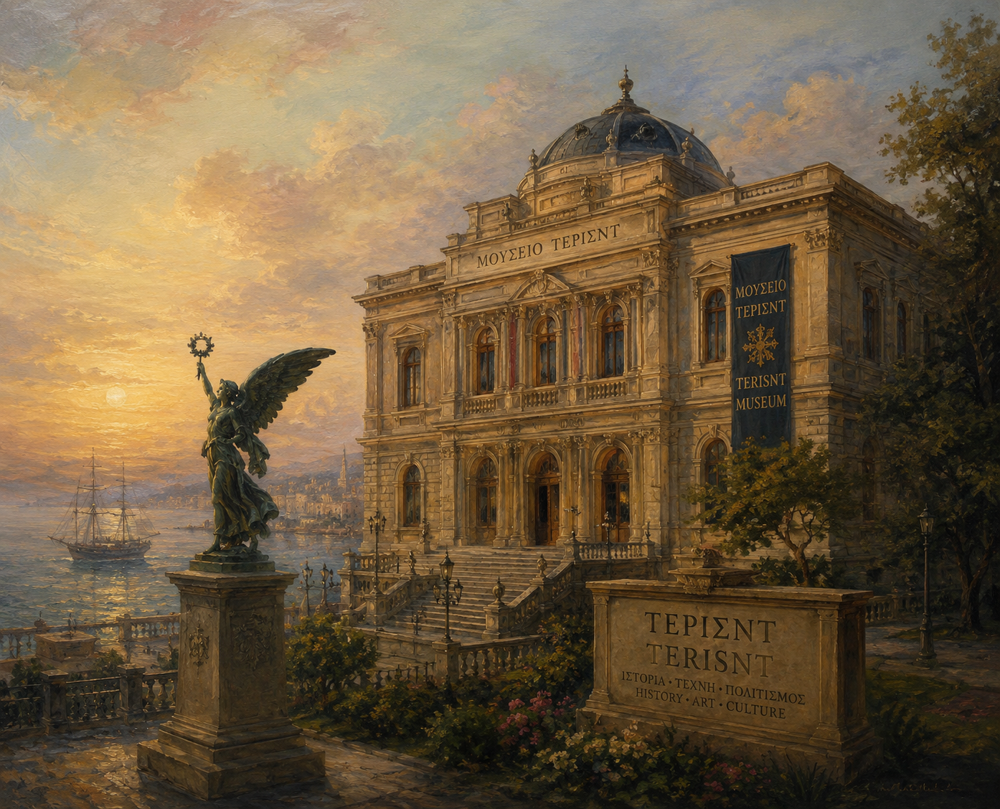
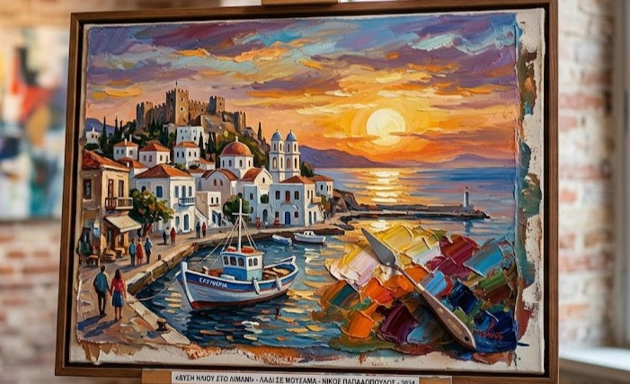
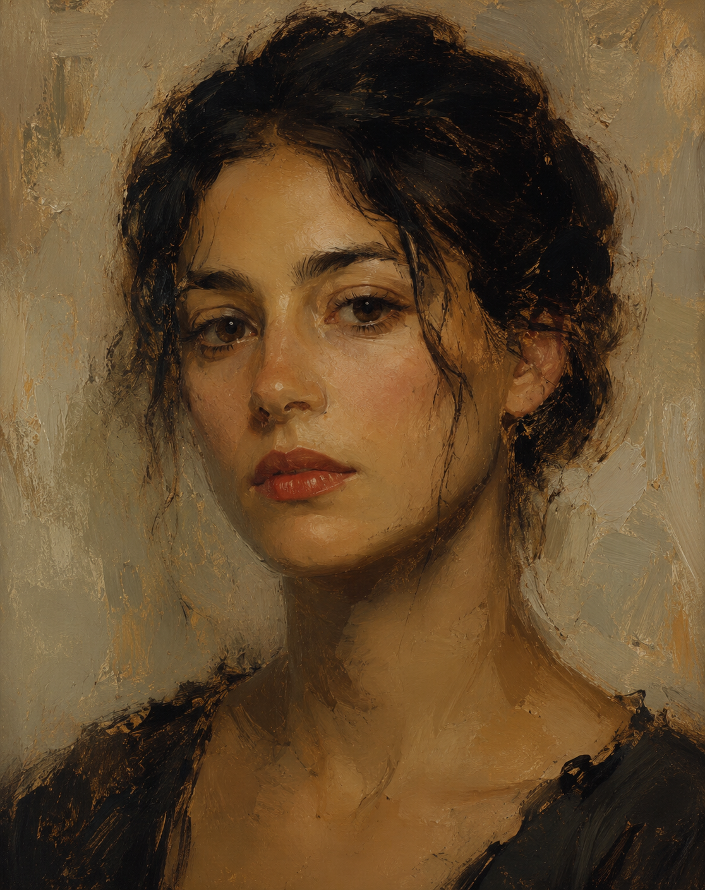
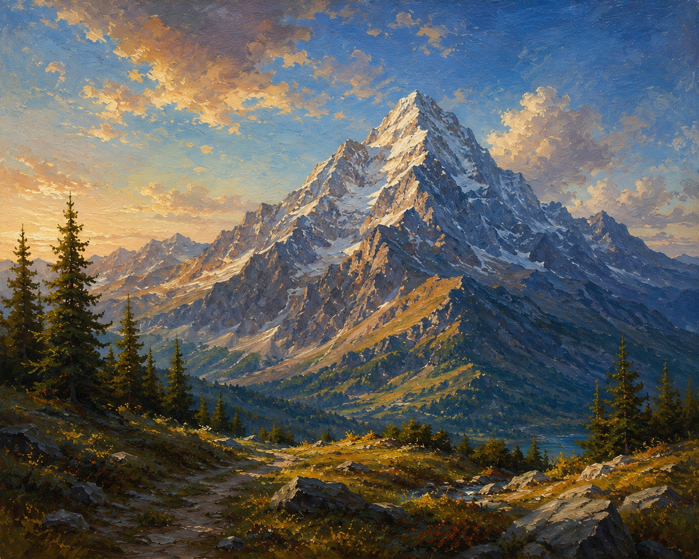
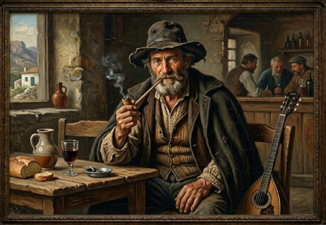
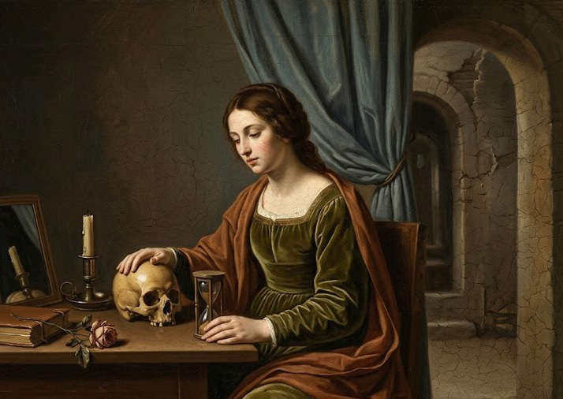
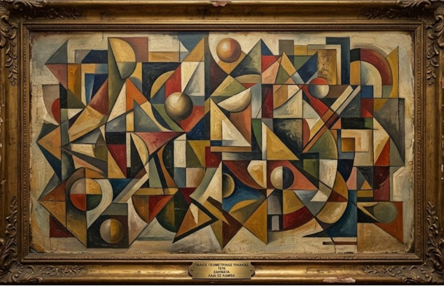
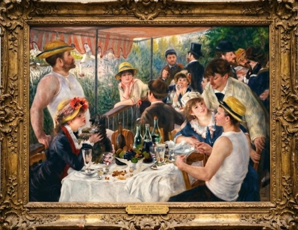
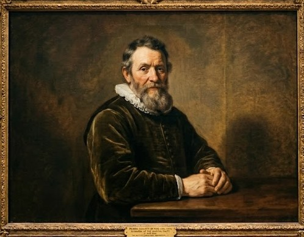
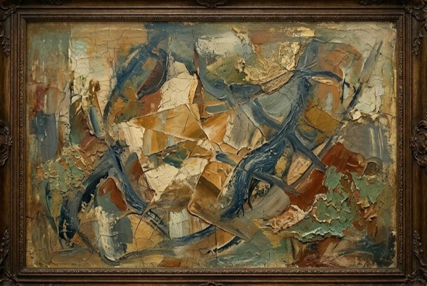
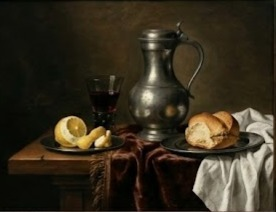
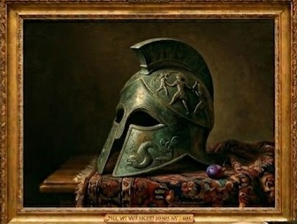
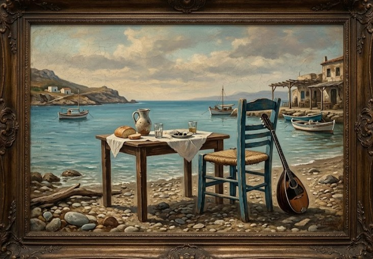
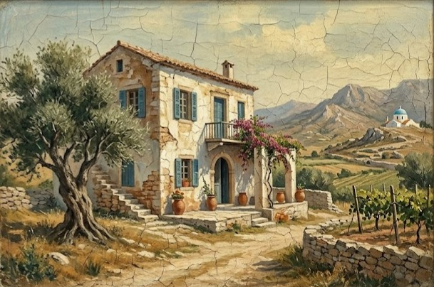
Η συλλογή του Μουσείου Teriade περιλαμβάνει σπάνια έργα ζωγραφικής, λιθογραφίες και καλλιτεχνικές εκδόσεις που αντιπροσωπεύουν σημαντικά ρεύματα της μοντέρνας τέχνης του 20ού αιώνα. Τα έργα ξεχωρίζουν για τη δημιουργικότητα, τις έντονες αντιθέσεις χρωμάτων και τις πρωτοποριακές τεχνικές που χρησιμοποίησαν οι καλλιτέχνες της εποχής.
Μέσα από τις συλλογές του μουσείου, ο επισκέπτης μπορεί να γνωρίσει διαφορετικά καλλιτεχνικά στυλ, από τον κυβισμό και τον σουρεαλισμό μέχρι τη λαϊκή ελληνική ζωγραφική. Οι πίνακες και οι εικονογραφήσεις εκφράζουν συναισθήματα, φαντασία και στοιχεία της καθημερινής ζωής, δημιουργώντας μια ιδιαίτερη πολιτιστική εμπειρία.
Η συλλογή θεωρείται μοναδική για την Ελλάδα, καθώς συνδυάζει έργα διεθνώς αναγνωρισμένων καλλιτεχνών με σημαντικά δείγματα ελληνικής καλλιτεχνικής παράδοσης.
Video
Το βίντεο δείχνει έναν ήσυχο χώρο μουσείου όπου η κάμερα προχωρά αργά ανάμεσα σε τοίχους γεμάτους πίνακες ζωγραφικής. Περνά από διάφορα έργα τέχνης, εστιάζοντας σε λεπτομέρειες και χρώματα, ενώ στο χώρο υπάρχουν λίγοι επισκέπτες που κινούνται αθόρυβα και παρατηρούν τα εκθέματα. Η ατμόσφαιρα είναι ήρεμη και καλλιτεχνική, με απαλό φωτισμό και αίσθηση σεβασμού προς τα έργα.